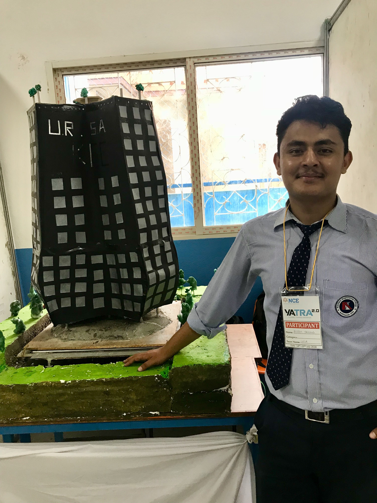
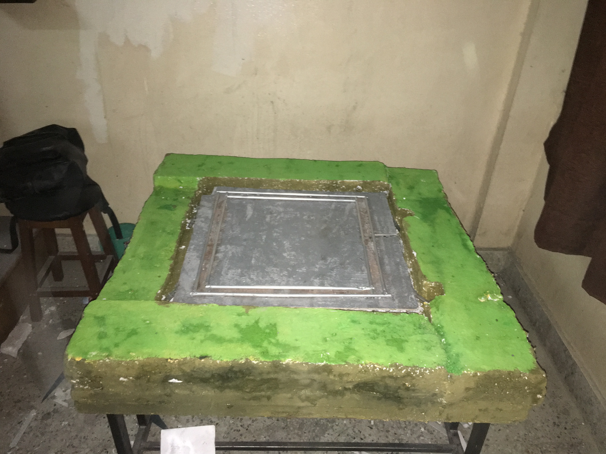
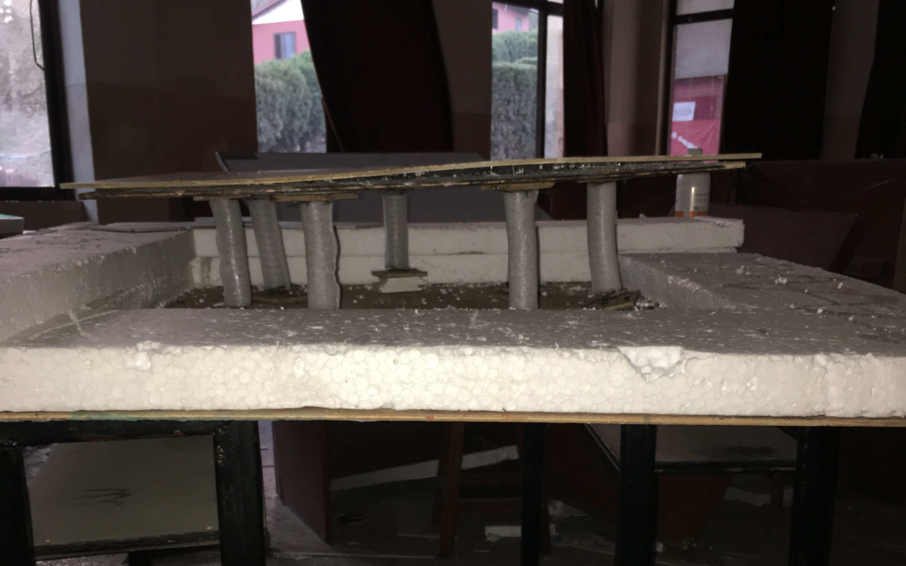
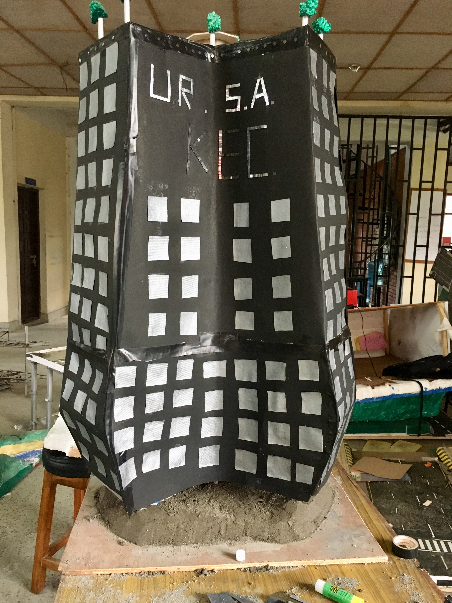
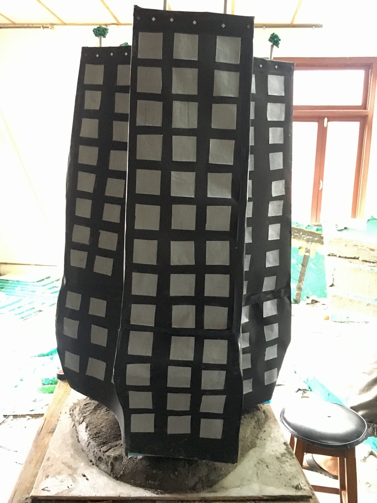
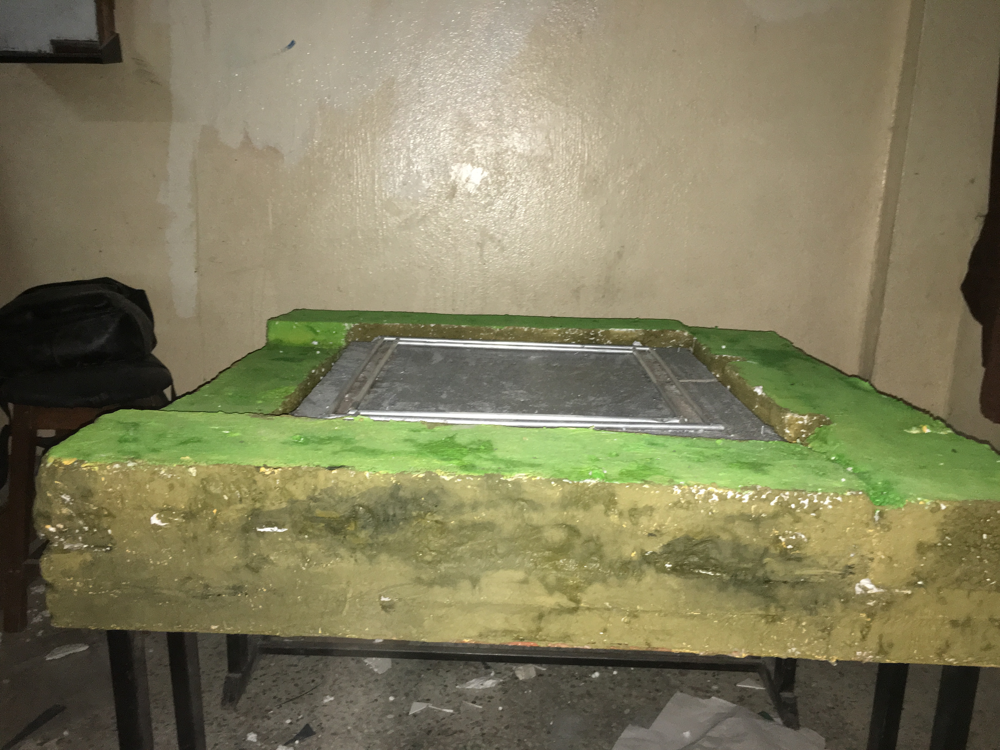

Project Description
- Project Type:Project for exhibition
Method
- The project involved implementing a shock absorber and base isolation system underground. Base isolation systems are designed to decouple a structure from the damaging effects of ground shaking during an earthquake.
Results
- The project was successful in reducing the intensity of earthquake vibrations on the superstructure. The effectiveness was assessed by measuring vibration levels using a smartphone accelerometer application.
- Since a smartphone accelerometer was used, it's likely this was a small-scale experiment, possibly a physical model, rather than a real building.
Note
- Since a smartphone accelerometer was used, it's likely this was a small-scale experiment, possibly a physical model, rather than a real building.

Building with me

Building Base

Base

Model
Certificate

model

Building Base
Certificate from NCE